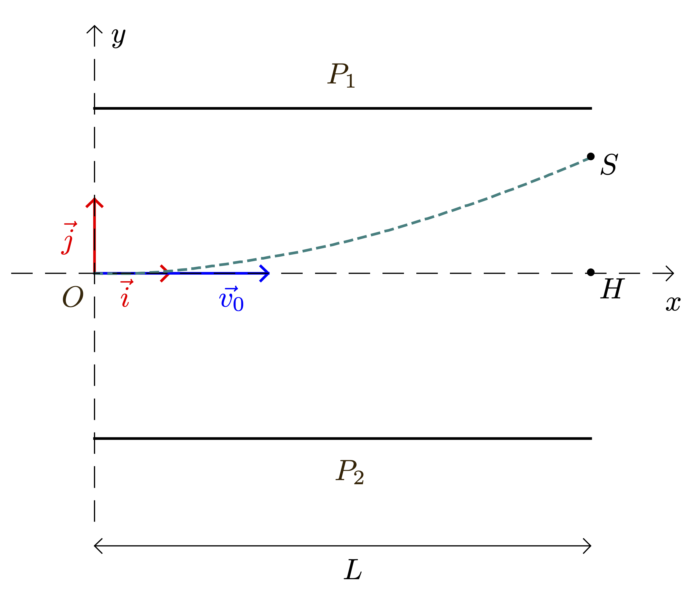

Le problème posé par la nature des « rayons cathodiques » à la fin du XIXème siècle fut résolu en 1897 par l’Anglais J.J. Thomson : il s’agissait de particules chargées négativement baptisées par la suite « électrons ». La découverte de l’électron valut à Thomson le prix Nobel de physique en 1906.
Le défi pour les scientifiques de l’époque fut alors de déterminer les caractéristiques de cette particule : sa charge électrique et sa masse. Dans un premier temps, Thomson lui-même, en étudiant la déviation d’un faisceau d’électrons dans un champ électrique, put obtenir le « rapport $e/m_e$ » de ces deux caractéristiques.
C’est cependant l’Américain R. Millikan qui, réalisant de multiples expériences entre 1906 et 1913 sur des gouttelettes d’huile, détermina la valeur de la charge de l’électron.
Actuellement, les valeurs admises de la masse et de la charge de l’électron sont : $$ m_e = \pu{9,1093826e-31 kg} \text{ et } e = \pu{1,602176565e-19 C} $$
L’expérience de J.J. Thomson
Lors de ses recherches dans son laboratoire de Cambridge, Thomson conçoit un dispositif dans lequel un faisceau d’électrons est dévié lors de son passage entre deux plaques où règne un champ électrique. La mesure de la déviation du faisceau d’électrons lui permet alors de déterminer le rapport $e/m_e$.
L’étude suivante porte sur le mouvement d’un électron du faisceau qui pénètre entre deux plaques parallèles et horizontales $P_1$ et $P_2$, dans une zone où règne un champ électrique $\vec{E}$ supposé uniforme et perpendiculaire aux deux plaques.
Figure 1
- À l’instant $t = \pu{0 s}$, l’électron arrive en un point $O$ avec une vitesse horizontale $\vec{v}_0$.
- La trajectoire de l’électron dans un repère $(O,x,y)$ est fournie sur la figure 1.
- L’électron de masse $m_e$ et de charge $q = -e$, dont le mouvement étudié dans le référentiel terrestre supposé galiléen, est soumis à la seule force électrostatique $\vec{F}_e$.
-
Reprendre sur sa copie la figure 1 sans soucis d’échelle et représenter, en justifiant les tracés,
- le vecteur force $\vec{F}_e$ en un point de la trajectoire de l’électron ;
- le vecteur champ électrique $\vec{E}$ en un point quelconque situé entre les plaques $P_1$ et $P_2$.
-
En utilisant la deuxième loi de Newton, déterminer les équations horaires $x(t)$ et $y(t)$ du mouvement de l’électron.
-
Vérifier que la trajectoire de l’électron a pour équation : $$ y = \dfrac{e E}{2 m_e v_0^2}\, x^2 $$
-
À la sortie de la zone entre les plaques $P_1$ et $P_2$, l’électron a subi une déviation verticale $SH$ comme l’indique la figure 1. On mesure $SH = y_S = \pu{(2,00 \pm 0,05)\cdot 10^{-2} m}$.
Déterminer, dans cette expérience, la valeur du rapport $e/m_e$ de l’électron.
Conclure.
Données
- Longueur des plaques : $L = \pu{(9,00 \pm 0,05)\cdot 10^{-2} m}$ ;
- Vitesse initiale de l’électron : $v_0 = \pu{(2,40 \pm 0,02)\cdot 10^{7} m.s-1}$ ;
- Valeur du champ électrique : $E = \pu{(1,60\pm 0,01)\cdot 10^{4} V.m-1}$.
- L’incertitude du rapport $e/m_e$, notée $U(e/m_e)$, s’exprime à l’aide de la formule suivante : $$ U(e/m_e) = \dfrac{e}{m_e}\, \sqrt{ \left( \dfrac{U(E)}{E} \right)^2 + \left( \dfrac{U(y_S)}{y_S} \right)^2 + 4 \left( \dfrac{U(L)}{L} \right)^2 + 4 \left( \dfrac{U(v_0)}{v_0} \right)^2 } $$ Calculer l’incertitude $U(e/m_e)$, puis exprimer le résultat de $e/m_e$ avec cette incertitude.
L’expérience de Millikan
L’objectif de Millikan est de montrer qu’un corps chargé ne peut porter qu’une charge électrique multiple d’une « charge élémentaire ».
Figure 2
Un pulvérisateur produit un nuage de gouttelettes d’huile chargées négativement qui tombent dans la chambre supérieure du dispositif. Lorsque l’une d’elles passe à travers le trou $T$, elle tombe verticalement à une vitesse constante $v_1$, son poids étant très vite compensé par la force de frottement exercée par l’air. Lors de cette première étape, la chute verticale de la gouttelette dans l’air en l’absence de champ électrique est observée à l’aide d’un microscope et permet de déterminer le rayon $r$ de la gouttelette qui n’est pas mesurable directement.
Lors d’une deuxième étape, lorsque la gouttelette parvient en bas du dispositif, un champ électrique uniforme est créé entre les plaques $A$ et $B$. La gouttelette remonte alors verticalement à une vitesse constante $v_2$.
La charge électrique portée par la gouttelette est ensuite déduite des mesures des vitesses $v_1$ et $v_2$.
- Lors de l’expérience menée au laboratoire, une gouttelette de masse $m$ et de charge $q$ négative arrive entre les plaques $A$ et $B$.
- La poussée d’Archimède est négligée. La gouttelette étudiée est soumise à son poids $\vec{P}$ et à la force de frottement $\vec{f}$ exercée par l’air s’exprimant par la relation $$ \vec{f} = -6\pi\, \eta\, r\, \vec{v} $$ dans laquelle $\eta$ est la viscosité de l’air, $r$ le rayon de la gouttelette et $\vec{v}$ sa vitesse.
Données
- Masse volumique de l’huile : $\rho = \pu{890 kg.m-3}$ ;
- Valeur du champ de pesanteur : $g = \pu{9,8 N.kg-1}$ ;
- Viscosité de l’air : $\eta = \pu{1,8e-5 kg.m-1.s-1}$.
Chute verticale de la gouttelette
-
Lors de la chute de la gouttelette en l’absence de champ électrique, écrire la relation vectorielle entre la force de frottement fluide et le poids lorsque la vitesse constante $v_1$ est atteinte.
En déduire l’expression de $v_1$ en fonction de $\eta$, $r$, $m$ et $g$. -
Sachant que le volume d’une sphère a pour expression $V = \dfrac{4}{3}\, \pi r^3$, montrer que la relation précédente peut aussi s’écrire : $$ v_1 = \dfrac{2}{9}\, \dfrac{\rho g r^2}{\eta} $$ où $\rho$ est la masse volumique de l’huile.
-
Déterminer le rayon $r$ de la gouttelette sachant qu’elle parcourt, lors de sa chute, une distance de $\pu{2,11 mm}$ pendant une durée $\Delta t = \pu{10,0 s}$.
-
Afin de faciliter la mesure au microscope, la gouttelette ne doit pas être trop rapide. En déduire s’il est préférable de sélectionner une grosse gouttelette ou au contraire une petite gouttelette.
Remontée de la gouttelette
-
Lors de la remontée de la gouttelette entre les plaques $A$ et $B$, en présence du champ électrique, écrire la relation vectorielle entre la force de frottement fluide, le poids et la force électrique, lorsque la vitesse constante $v_2$ est atteinte.
En déduire l’expression de $v_2$ en fonction de $\eta$, $r$, $m$, $g$, $q$ et $E$. -
En utilisant les relations démontrées aux questions 5. et 9., montrer que la charge $q$ de la gouttelette est donnée par la relation $$ q = - \dfrac{6\pi\, \eta\, r\, (v_1 + v_2)}{E} $$
Plusieurs mesures ont été réalisées pour différentes gouttelettes et rassemblées dans le tableau suivant :
| Numéro | Rayon de la goutte $r$ ($\mu m$) | Vitesse $v_1$ de la goutte ($\times \pu{e-4 m.s-1}$) | Vitesse $v_2$ de la goutte ($\times \pu{e-4 m.s-1}$) | Charge de la goutte $q$ (C) |
|---|---|---|---|---|
| 1 | 1,2 | 1,55 | 1,59 | $\pu{-6,4e-19}$ |
| 2 | 1,3 | 1,82 | 1,81 | $\pu{-8,0e-19}$ |
| 3 | 1,5 | 2,42 | 1,35 | $\pu{-9,6e-19}$ |
| 4 | 1,6 | 2,76 | 3,13 | $\pu{-1,6e-19}$ |
| 5 | 1,82 | 2,53 | $\pu{-9,6e-19}$ |
-
Les gouttelettes n°2 et n°5 ont la même vitesse de descente $v_1$ mais des vitesses de remontée $v_2$ différentes.
- Déterminer sans calcul le rayon de la gouttelette n°5. Justifier.
- Pourquoi leurs vitesses de remontée sont-elles différentes ?
-
Montrer, à partir des résultats expérimentaux, que la charge de ces gouttelettes est « quantifiée », c’est-à-dire qu’elle ne prend que des valeurs multiples d’une même charge élémentaire égale à $\pu{1,6e-19 C}$.